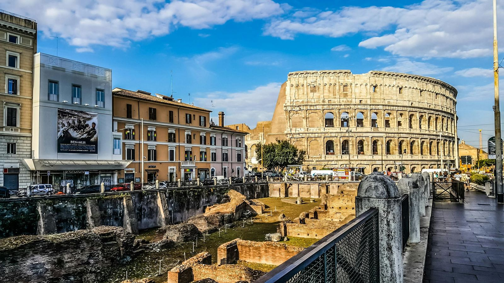

Roma, la Città Eterna, con la sua storia, arte e natura, offre un'esperienza indimenticabile e unica.
Roma, la Città Eterna, è un luogo unico che incanta con i suoi panorami, colori e profumi. La sua magia è stata celebrata da poeti e artisti per secoli. Roma è un’esperienza indimenticabile che lascia un segno indelebile in chi la visita.
La fondazione di Roma risale al 753 a.C., quando Romolo e Remo, allevati da una lupa, decisero di costruire una città. Romolo vinse il diritto di governare grazie agli auspici degli dei e la città si espanse sui famosi sette colli: Palatino, Aventino, Campidoglio, Quirinale, Viminale, Esquilino e Celio.

Il Tevere, un tempo importante via di comunicazione, è ancora oggi un simbolo di Roma, anche se il contatto diretto con il fiume è cambiato nel tempo. Rimane, però, il rispetto e l'amore per questo corso d'acqua che ha visto nascere e crescere la città.
Roma è un tesoro di beni storici e culturali con il 16% del patrimonio mondiale e il 70% di quello italiano. Il suo centro storico, incluso nella lista dei Patrimoni dell’umanità dell’UNESCO, è una fusione di quasi tre millenni di storia. Inoltre, Roma ospita la Città del Vaticano, rendendola unica al mondo come capitale di due stati.
Per chi visita Roma per la prima volta, ecco i cinque monumenti da non perdere:
- Il Colosseo
- Il Pantheon
- Il Foro Romano e il Palatino
- La Fontana di Trevi
- Piazza Navona
Roma è una delle città più verdi d’Europa, ricca di parchi e giardini storici come Villa Borghese e Villa Doria Pamphilj. Spazi verdi come il Parco Regionale dell’Appia Antica offrono un connubio perfetto tra natura e archeologia.
Il simbolo di Roma per eccellenza è la lupa capitolina, seguita dall’aquila imperiale e dal Colosseo. Roma è anche protagonista di numerosi modi di dire che ne celebrano l’importanza storica e culturale, come "Tutte le strade portano a Roma".

Roma è un luogo dove ogni angolo racconta una storia, dove la bellezza si fonde con la storia e la cultura in un modo unico. Dai suoi sette colli al maestoso Tevere, dai monumenti iconici alle incantevoli aree verdi, la Capitale offre un viaggio senza tempo attraverso secoli di arte e civiltà. Ogni visita a Roma è un’opportunità per scoprire qualcosa di nuovo e per innamorarsi ancora una volta della sua eterna magia.
fonte: Roma in breve
Parole Chiave
| Arte | Disegni, dipinti, sculture e altre cose belle |
| Capitale | Città più importante di un paese |
| Città Eterna | Nome di Roma, che esiste da molto tempo |
| Colli | Piccole montagne |
| Cultura | Idee, arte, e storia di un luogo |
| Esperienza | Cosa che provi e vivi |
| Fiume | Grande corso d'acqua |
| Fondazione | Inizio, creazione |
| Fontana | Costruzione da cui esce acqua |
| Governare | Guidare una città o un paese |
| Magia | Cose speciali che sembrano fatte con poteri magici |
| Monumenti | Costruzioni importanti e storiche |
| Natura | Piante, alberi, e animali |
| Panorami | Belle viste di paesaggi |
| Patrimonio | Cose di valore di un paese |
| Poesia | Parole belle e speciali messe insieme |
| Profumi | Buoni odori |
| Rispettare | Avere una buona opinione di qualcuno o qualcosa |
| Romolo e Remo | Fondatori di Roma secondo la leggenda |
| Simbolo | Segno che rappresenta qualcosa |
| Storia | Racconto di cose accadute nel passato |
| Unico | Solo, speciale |
| Via | Strada |
| Visitare | Andare a vedere un luogo |
| Verde | Colore delle piante e degli alberi |
Esercizio
Domande
- Chi sono Romolo e Remo nella storia di Roma?
- Perché il fiume Tevere è importante per Roma?
- Quali sono i cinque monumenti di Roma menzionati nell'articolo?
- Perché il centro storico di Roma è speciale?
- Quali simboli di Roma sono elencati nell'articolo?